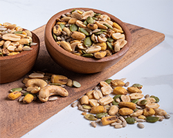

Recomendaciones, beneficios y tips sobre nuestros productos naturales. Aprendé a consumirlos y mejorá tu bienestar.
Beneficios de la Cúcuma
La cúcuma es una especia con propiedades antiinflamatorias y antioxidantes. Se puede consumir en infusiones, mezclada con leche vegetal ("leche dorada") o como condimento en comidas.
Tip: Consumila 1 vez al día en pequeñas cantidades para aprovechar sus beneficios.
¿Por qué tomar té verde?
El té verde El té verde es una bebida popular con múltiples beneficios para la salud, principalmente debido a su alto contenido de antioxidantes y catequinas, que ayudan a proteger las células del daño. Es conocido por su capacidad para mejorar la función cerebral, ayudar en la pérdida de grasa y reducir el riesgo de ciertas enfermedades, incluyendo algunas formas de cáncer.
Mix Cervecero 🍻

Nuestro Mix Cervecero Un mix cervecero, o mezcla de frutos secos para picar, puede ofrecer beneficios como una fuente de proteínas, fibra y grasas saludables. Además, puede ser una opción energizante y versátil para disfrutar en diferentes momentos.
¿Beneficios de las Semillas de Chía?
Las semillas de chía ofrecen una gran cantidad de beneficios para la salud, incluyendo apoyo a la salud cardiovascular, regulación del azúcar en sangre, mejora de la función cognitiva y fortalecimiento del sistema inmunológico
Pasas Negras
Las Pasas Negras ofrecen varios beneficios para la salud, incluyendo el fortalecimiento de los huesos gracias a su contenido de calcio, magnesio y potasio. Además, son una fuente de hierro y antioxidantes, que ayudan a mejorar la energía, prevenir la anemia y combatir los radicales libres. Su consumo también puede mejorar la salud cardiovascular y la digestión.